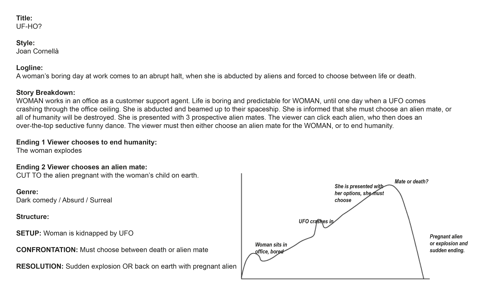
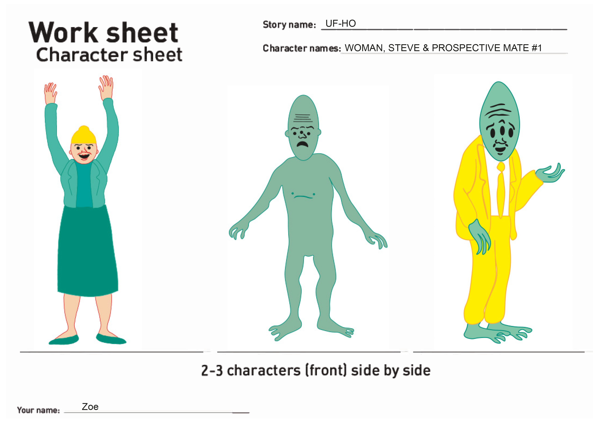

02.02.01 Week submission_part one_ part two_part three
What was the project?
I had to create a story based on a specific art style. I had to include a logline, genre/mood, narrative curve, dramaturgic elements, message and anything else creative I could come up with. I also had to create a storyboard, style tile, character worksheet and a background for my sprite sheet animation.
What did I learn?
I tried to keep the style and content in line with the craziness of Joan Cornellá's comics. In a way it prepared me for the projects later on, where we had to follow real design guides. For example, when we had to follow the Copenhagen Municipality's design guide for our bicycle project.
I learnt how to create a sprite sheet in Illustrator and make it come to life with HTML and CSS.
I was also introduced to the 12 Disney Animation Principles, which inspired my animation. If my sprite animation had been more complicated I certainly would have made use of these principles more. But even in my short little one I made use of the staging principle, with the main character stood slightly to the side. As well as the pose to pose principle with his hand.
What would I change today?
Some of the feedback I got on my project was that I should have more pictures and colors on my style tile. I agree with this statement and would perhaps have it on 2 pages if I had to redo it. My style tile does give a sense of what I was going for, but I certainly could have been more expressive.
I would have liked to play around with more characters or even draw out the actual comic. I also would have liked to spend more time on my sprite animation and play around with more of the disney principles. For example, I could have used the timing principle for the alien's hand as well as animating more of his body. The style also lends itself to a bit of exaggeration, which I could have made more use of in the character animation. I really enjoyed working on this project, and was happy overall: both with the response I received from teachers as well as my own process.
Below you can see my sketches, style tile, characters and storyboard.
 Storyboard